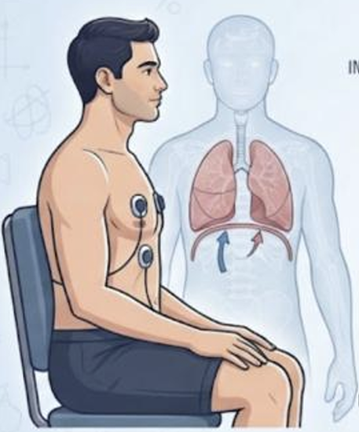
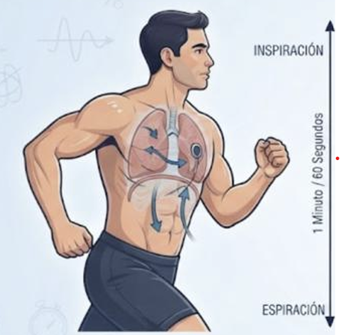

Se observa a un adulto sentado y en reposo durante un minuto completo.
Dato inicial: 15 ciclos respiratorios (15 rpm).

El adulto incrementa su actividad física mediante una prueba de esfuerzo o caminata ligera.
Dato inicial: Aumenta a 24 respiraciones por minuto.
Ambos escenarios permiten contrastar el comportamiento del sistema respiratorio bajo demandas metabólicas basales frente a un estado de exigencia física.